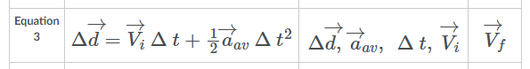

The Five Key Equations of Accelerated Motion
By analyzing the graphs, we can derive the formulas to solve kinematic questions.
Sample Problem:

A sports car approaches a highway on-ramp at a velocity of 20 m/s East. If the car accelerates at a rate of 3.2 East for 5.0 s, what is the displacement of the car?
STRATEGY: List down and analyze the given and identify what is being asked.
Given:
Question: What equation do you think should we use?
Since what is missing is the displacement and we are given the initial velocity, acceleration, and time interval, we will use equation no. 3.

Given:
Solution:
[Plug the values in your calculator and solve]
Show Answer
Sample Problem:

A dart is thrown at a target that is supported by a wooden backstop. It strikes the backstop with an initial velocity of 350 m/s East. The dart comes to rest at 0.0050s. What is its acceleration?
STRATEGY: Analyze the problem carefully. Since the dart stopped, the final velocity is 0 m/s.
Given:
What equation do you think should we use to find the acceleration of the dart?
To find the acceleration, we use equation no. 2 since displacement is not given. Then, we need to rearrange the equation to solve for acceleration.
Let's rearrange the equation:
[Plug the values in your calculator and solve]
Show Answer